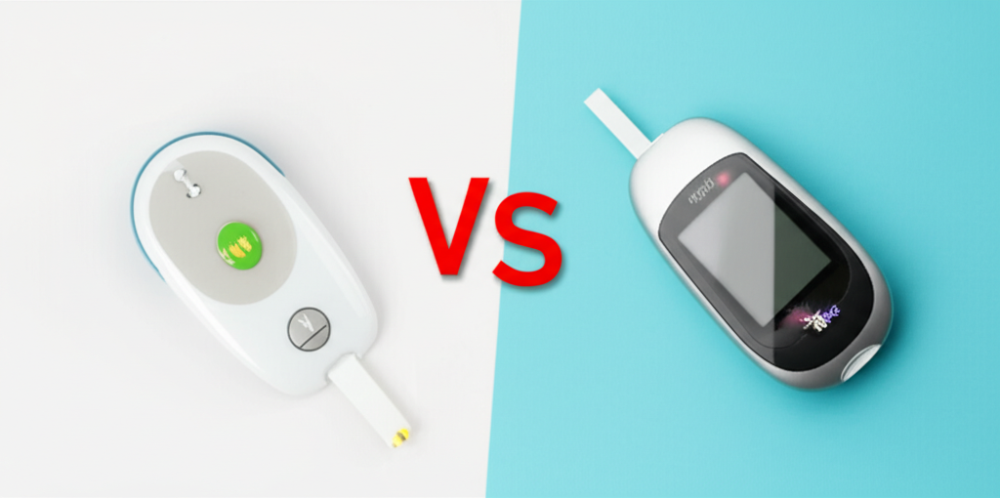

CGM vs Glucometer: Which Is Better for Indian Diabetics? (2026 Guide)

A no-nonsense comparison of Continuous Glucose Monitors and traditional glucometers — with real costs in rupees, accuracy data, and a practical decision framework for every Indian diabetic.
India has over 101 million people living with diabetes — the highest in the world. Yet most Indian diabetics still rely on finger-prick glucometers that give just 2-4 readings a day. Meanwhile, Continuous Glucose Monitors (CGMs) like FreeStyle Libre and Dexcom are becoming increasingly available in Indian pharmacies and online.
The question every Indian diabetic is asking: Is a CGM worth the extra cost, or is a good glucometer enough?
As someone who was diagnosed with Type 2 diabetes and has used both extensively, I'm going to break this down with real numbers, real data, and practical advice tailored for Indian budgets and lifestyles.
⚡ Bottom Line Up Front
For most Indian Type 2 diabetics, a hybrid approach works best: use a CGM for 2-4 weeks to learn your body's glucose patterns, then switch to a glucometer for daily monitoring. Budget: ₹3,000-5,000 for the learning phase, then ₹500-1,000/month ongoing.
1. What Is a Glucometer? What Is a CGM?
The Glucometer (Finger-Prick Monitor)
A glucometer is the device most Indian diabetics know well. You prick your finger, put a drop of blood on a test strip, and get a blood sugar reading in 5 seconds. It's been the standard for 30+ years.
- How it works: Measures glucose directly from a blood sample
- Reading frequency: Each test requires a new strip and finger prick
- Data: Single point-in-time readings (typically 2-4 per day)
- Popular in India: Accu-Chek, OneTouch, BeatO, Contour Plus
The CGM (Continuous Glucose Monitor)
A CGM is a small sensor (about the size of a ₹2 coin) that you wear on your arm or abdomen. A tiny filament sits just under the skin and measures glucose in your interstitial fluid every 1-5 minutes — that's up to 1,440 readings per day vs 2-4 from a glucometer.
- How it works: Measures glucose in interstitial fluid (not blood directly)
- Reading frequency: Every 1-5 minutes, automatically
- Data: Continuous graph showing trends, spikes, and dips
- Available in India: FreeStyle Libre 2, FreeStyle Libre 3, Dexcom G7
2. Head-to-Head Comparison
| Feature | Glucometer | CGM |
|---|---|---|
| Readings per day | 2-4 (manual) | 288-1,440 (automatic) |
| Pain | Finger prick every test | One insertion every 10-14 days |
| Monthly cost (India) | ₹300-800 | ₹5,000-16,000 |
| Shows trends | ❌ No | ✅ Yes — full 24-hour graph |
| Detects overnight lows | ❌ No (you're asleep) | ✅ Yes — with alarms |
| Shows food response | Partially (need pre/post meal tests) | ✅ Complete spike + recovery curve |
| Time in Range | ❌ Cannot calculate | ✅ Yes — gold standard metric |
| Accuracy (MARD) | 10-15% | 7.9-9.2% |
| Insurance coverage (India) | Rarely | Almost never |
| Phone app | Some (BeatO, Accu-Chek) | Yes — LibreLink, Dexcom, etc. |
3. Cost Comparison in India (2026 Prices)
Cost is the biggest factor for Indian diabetics. Let's break it down honestly:
Glucometer Costs
| Item | Cost | Notes |
|---|---|---|
| Glucometer device | ₹500-2,000 | One-time cost; BeatO offers free with subscription |
| Test strips (50 pack) | ₹500-1,200 | ₹10-25 per strip |
| Lancets (100 pack) | ₹150-300 | Should change each prick |
| Monthly cost (4 tests/day) | ₹600-1,200 | Strips are the ongoing expense |
| Monthly cost (2 tests/day) | ₹300-600 | Minimum recommended |
CGM Costs
| Device | Per Sensor | Sensor Life | Monthly Cost |
|---|---|---|---|
| FreeStyle Libre 2 | ₹2,500-3,500 | 14 days | ₹5,000-7,000 |
| FreeStyle Libre 3 | ₹3,500-4,500 | 14 days | ₹7,000-9,000 |
| Dexcom G7 | ₹6,000-8,000 | 10 days | ₹12,000-16,000 |
🔴 The Cost Reality
A CGM costs 8-20x more than a glucometer per month. For a middle-class Indian family, spending ₹7,000/month on glucose monitoring alone is significant. This is why a strategic approach matters more than "CGM is always better."
4. Accuracy: Which Gives Better Readings?
This is where it gets nuanced. Both are "accurate" but measure different things:
- Glucometer: Measures blood glucose directly. MARD (Mean Absolute Relative Difference) of 10-15%. Cheap strips can be worse.
- CGM: Measures interstitial fluid glucose, which lags blood glucose by 5-15 minutes. MARD of 7.9% (Libre 3) to 9.2% (Libre 2).
💡 What This Means Practically
If your actual blood sugar is 150 mg/dL:
- Glucometer might show 128-172 mg/dL (±15%)
- CGM might show 138-162 mg/dL (±8%) — but of your level 10 minutes ago
For trending and patterns, CGM wins. For a single precise reading right now, a good glucometer is equally reliable.
5. Real-World: What CGM Reveals That Glucometers Miss
This is the game-changer. A glucometer shows you 2-4 photos per day. A CGM shows you the full movie. Here's what the "movie" reveals:
Hidden Post-Meal Spikes
You test before lunch: 110 mg/dL. You test 2 hours after: 140 mg/dL. "Great control!" you think. But CGM data shows your glucose actually spiked to 210 mg/dL at the 45-minute mark and came back down. That spike matters — it causes oxidative stress and vascular damage even if your 2-hour reading looks fine.
Overnight Patterns
Many Indian diabetics experience the Dawn Phenomenon — blood sugar rises between 3-6 AM due to hormonal changes. A glucometer misses this entirely because you're asleep. CGM catches it and can show if your fasting reading of 130 mg/dL was actually 95 mg/dL at midnight that rose steadily.
Exercise Impact
Walking after dinner brings blood sugar down — but by how much, and how fast? CGM shows the exact curve. In my experience, a 15-minute walk after roti + sabzi reduced my post-meal peak by 30-40 mg/dL. A glucometer would never show this level of detail.
Time in Range (TIR)
This is the metric diabetes experts now consider more important than HbA1c. Time in Range measures what percentage of the day your glucose stays between 70-180 mg/dL. Only a CGM can calculate this. Target: >70% Time in Range.
✅ Real Insight From My CGM
When I first wore a CGM, I discovered that white rice at dinner spiked me 80+ mg/dL, but the same rice at lunch only spiked me 45 mg/dL. Same food, different time — different result. A glucometer testing at 2 hours would have shown similar "acceptable" readings for both meals. Only CGM caught the difference.
6. Who Actually Needs a CGM?
Not everyone needs continuous monitoring. Here's an honest assessment:
CGM Is Strongly Recommended If You:
- Are on insulin (Type 1 or Type 2) — risk of hypoglycemia
- Have unpredictable glucose patterns despite medications
- Are newly diagnosed — learning phase is invaluable
- Have HbA1c above 8% and need to identify problem areas
- Experience hypoglycemia unawareness (don't feel lows)
- Are pregnant with gestational diabetes — tight control needed
A Glucometer Is Probably Sufficient If You:
- Have stable Type 2 diabetes on oral medications only
- Consistently meet HbA1c targets (<7%)
- Follow a consistent diet and routine
- Budget is a primary concern
- Have been managing diabetes for years with good control
7. Best Options Available in India (2026)
Best Glucometers
| Device | Price | Best For | Key Feature |
|---|---|---|---|
| BeatO Smart | Free (with plan) | Budget + app tracking | Connects to phone, doctor consultations |
| Accu-Chek Instant | ₹900 | Accuracy | Intuitive traffic light indicator |
| OneTouch Select Plus | ₹800 | Ease of use | Colour range indicator, good for seniors |
| Contour Plus One | ₹1,200 | Bluetooth + smart app | Second-chance sampling, Bluetooth sync |
Best CGMs
| Device | Monthly Cost | Best For | Key Feature |
|---|---|---|---|
| FreeStyle Libre 2 | ₹5,000-7,000 | Best value CGM | 14-day wear, scan to read, alarms |
| FreeStyle Libre 3 | ₹7,000-9,000 | Real-time monitoring | Smallest sensor, continuous Bluetooth, 1-min readings |
| Dexcom G7 | ₹12,000-16,000 | Type 1 / insulin users | Most accurate, integrates with insulin pumps |
8. The Smart Hybrid Approach (Our Recommendation)
Here's the strategy I recommend for Indian diabetics — it maximizes learning while keeping costs manageable:
✅ The 3-Phase Strategy
- Phase 1 — Learn (Weeks 1-4): Wear a CGM (start with FreeStyle Libre 2). Test different Indian foods, meal timings, exercise patterns. Document everything. Cost: ₹5,000-7,000.
- Phase 2 — Maintain (Months 2-12): Switch to a glucometer with targeted testing (fasting + post-meal for any new foods). Use your CGM learnings to guide diet. Cost: ₹400-800/month.
- Phase 3 — Reassess (Quarterly): Wear a CGM for 2 weeks every 3 months to check if patterns have changed, especially after medication changes or lifestyle shifts. Cost: ₹2,500-3,500 per quarter.
Annual cost: ₹15,000-22,000 vs ₹60,000-84,000 for continuous CGM use. Same insights, 70% less cost.
9. CGM Insights: Indian Foods That Surprise
These are real findings from CGM data that glucometers would never catch — specific to Indian diets:
| Food | Expected Impact | CGM Reality |
|---|---|---|
| Idli (2 pieces) | Healthy — it's steamed! | Spike of 60-80 mg/dL (fermented rice batter is high GI) |
| Dalia (broken wheat) | Diabetic-friendly | Moderate spike 30-45 mg/dL — genuinely decent |
| Rajma (kidney beans) | High protein = safe | Spike of 25-35 mg/dL — protein + fiber slows absorption |
| Banana (1 medium) | Fruit = healthy | Spike of 50-70 mg/dL — high sugar, fast absorption |
| Roti (2) + sabzi | Standard Indian meal | Spike of 40-55 mg/dL — better with ghee (slows absorption) |
| Poha | Light breakfast | Spike of 55-70 mg/dL — flattened rice is high GI |
| Curd rice | Simple and safe | Spike of 35-45 mg/dL — curd's probiotics help! |
🍛 The Indian Food Rule
Pair every carb with protein, fat, or fiber. Roti alone spikes you. Roti + dal + sabzi + a little ghee? Much flatter curve. CGM data proves this repeatedly — and once you see your own graph, you'll never eat plain rice for dinner again.
10. Frequently Asked Questions
Q: Is CGM painful?
The insertion feels like a brief pinch — much less painful than a finger prick. You forget it's there within an hour. It's waterproof too, so no issues with showering or sweating in Indian summers.
Q: Can I buy CGM without a prescription in India?
FreeStyle Libre is available without prescription on Amazon, Flipkart, 1mg, and PharmEasy. Dexcom typically requires a prescription. Always buy from authorized sellers to avoid counterfeit sensors.
Q: My doctor says glucometer is enough. Should I ignore that?
Not at all. Many excellent diabetologists recommend glucometers as sufficient for well-controlled Type 2 diabetes. But if you're curious about your food responses or struggling with control, even one CGM cycle can be eye-opening. Discuss with your doctor.
Q: Does CGM work with Health Gheware app?
Yes! Health Gheware can help you track and analyze your glucose data from both glucometers and CGMs. Our AI-powered insights are designed specifically for Indian diabetics and Indian dietary patterns.
Q: Will insurance cover CGM in India?
As of 2026, most Indian health insurance policies do not cover CGM sensors. Some corporate wellness programs and a few insurers are starting to include them for Type 1 diabetics. Check with your insurer — the landscape is changing.
The Verdict
There's no single right answer. Both tools have their place:
Use a CGM to learn — how your body responds to dal chawal, what happens during sleep, why your fasting sugar is high. Then use a glucometer to maintain that knowledge day-to-day. This is the most cost-effective and practical approach for Indian diabetics in 2026.
The best glucose monitor is the one you actually use consistently. Start where you are, learn your patterns, and optimize from there.
🚀 Take Action Today
- Already have a glucometer? Start testing fasting + 1 hour after your largest meal every day
- Ready to try CGM? Order a FreeStyle Libre 2 from Amazon.in (₹2,800-3,200 per sensor)
- Want AI-powered insights? Try Health Gheware — our free diabetes management tool built for Indian food and lifestyles